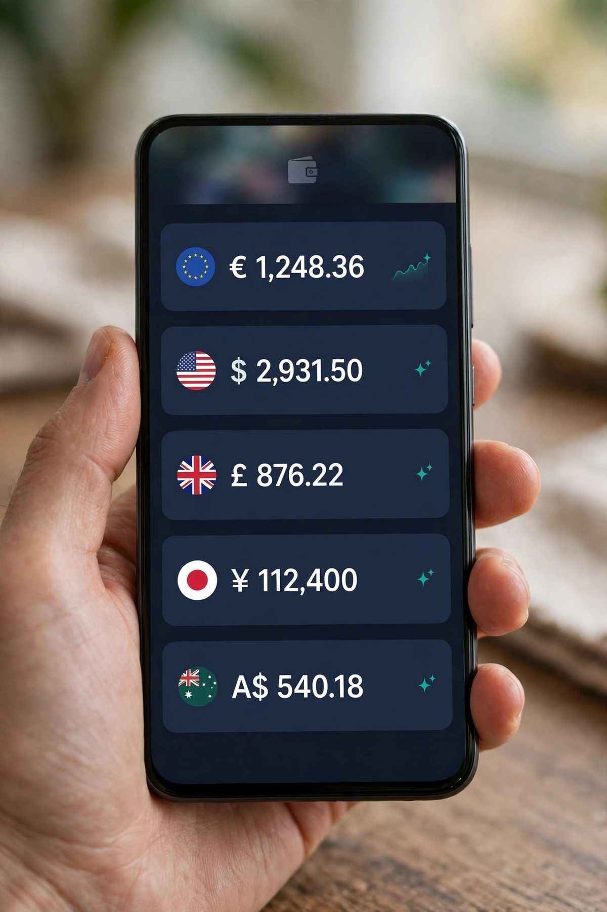

Multi-Currency Accounts: Hold, Convert and Spend Like a Local

What a multi-currency account is
A multi-currency account is a digital account that lets you hold balances in many currencies at once, convert between them at near the mid-market rate, and spend with a linked debit card. Instead of converting money every time you pay, you convert once, hold the balance, and spend it like a local. Many accounts also give you local bank details in several countries, so you can receive payments as if you had a local account.
These accounts are offered by fintech companies rather than traditional banks, and they compete on low spreads, typically under one percent, and transparent fees. Opening one usually takes minutes on a phone, with an identity check, and there is often no monthly fee for a basic account. The card works like any debit card, and the app shows your balances, rates, and spending in real time.
Who benefits most
Frequent travellers benefit most, because they can convert money when the rate is good and spend it later without converting again. Freelancers who are paid in foreign currencies benefit too, since they can receive payments in the client's currency and convert when they choose, rather than losing money on every payment. Small businesses that pay suppliers abroad save on every invoice, and the savings add up quickly over a year.
People who live between two countries, such as expatriates and international students, also benefit, since they can hold both currencies and move money between them cheaply. Even occasional travellers save compared with bank exchange, though the benefit is smaller for a single short trip. The key question is how often you deal with foreign currency; the more often, the more a multi-currency account saves.
Costs and limits to watch
Multi-currency accounts are cheap but not free. Most charge a small spread on conversions, a fee for ATM withdrawals above a monthly free limit, and sometimes a fee for weekend conversions on certain currencies. Some charge for a physical card or for a premium plan with higher limits. Read the fee schedule for the currencies you actually use, since fees differ by currency and by plan.
These accounts are also not full banks in every country, and your money may be held differently from a bank deposit, so check the protection that applies where you live. Keep a backup card from a traditional bank, in case the account is frozen for a security check while you are travelling. Used with those precautions, a multi-currency account is one of the best tools available for anyone who regularly handles more than one currency.
Putting It Into Practice
If you travel or earn in foreign currency more than twice a year, open a multi-currency account and test it with a small conversion first. Check the spread, the ATM withdrawal limits, and the weekend fees for the currencies you use, and compare the total cost with your bank for the same amount. Keep your old bank card as a backup, and use the new account for a full trip before deciding whether to switch permanently. A small trial removes the risk and shows the saving clearly.
Frequently Asked Questions
What is a multi-currency account?
A digital account that holds balances in many currencies, converts between them cheaply, and spends with a linked debit card.
Are multi-currency accounts safe?
They are regulated in most countries, but protection differs from a bank deposit, so check the terms where you live and keep a backup card.
Who should get a multi-currency account?
Frequent travellers, freelancers paid in foreign currency, expatriates, and small businesses paying suppliers abroad benefit most.